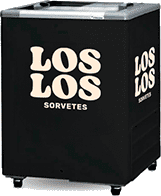
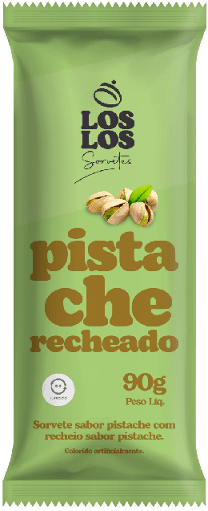
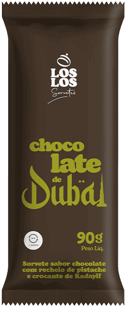
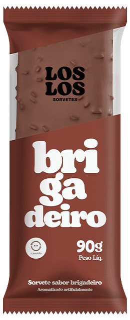
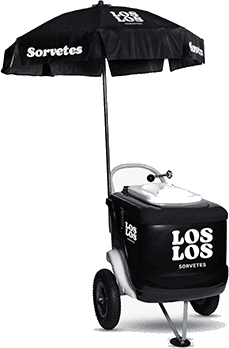

Em 2014 vocês
não venderam
sorvete.
Instalaram um canal.
Doze anos depois são 6.200 freezers acesos em 11 estados. Cada um é uma loja da Los Los. E a maior parte delas abre, vende e fecha sem ninguém ver.
Fontes do dado de marca: sorvetesloslos.com.br (6.200 pontos de venda, mais de 60 produtos, 11 estados) e ABRAMARK (freezer em comodato desde 2014, mais de 3 milhões de novos consumidores). Base do diagnóstico: conversa Los Los × 75 LAB de 14 de setembro de 2026.
2.800 freezers cabem numa rota de visita.
Os outros 3.400 não.
pontos de venda no BrasilCada freezer é uma vitrine da marca e o único vendedor presente na hora da decisão.
concentrados em São PauloO raio onde a operação consegue visitar, corrigir e aprender. É de onde vem quase toda a evidência de execução que existe hoje.
fora do raio de visita55% do parque instalado decide sozinho o que o shopper vê, quanto tempo o material fica no ar e em que estado o freezer opera.
Escalar visita presencial para 6.200 PDVs não é economicamente viável. A saída não é mais gente na rua: é priorizar quem merece visita e criar um mecanismo de prova que funcione sem ela. Posição dos pontos ilustrativa, com base na distribuição populacional do país.
O problema não é fazer mais peças.
É saber onde cada peça muda um número.
de faturamento anual do setor de sorvetes no Brasil, com mais de 10 mil empresas disputando espaço frio.
Fonte · ABISde crescimento projetado para as vendas de sorvete em 2026, depois de 2025 fechar em 6,8%.
Fonte · Abrasorvete, via Estadão Conteúdodas decisões de compra acontecem na frente da gôndola, não antes de o shopper entrar na loja.
Fonte · NielsenA categoria cresce, mas o crescimento não chega distribuído: ele chega para quem está visível na hora da decisão. É por isso que a conversa começa por priorização e execução, e não por volume de peças.
A decisão leva segundos.
E o freezer é o único vendedor presente.
Passar
O freezer entra no campo de visão do fluxo ou some no fundo da loja.
Parar
Alguma coisa precisa justificar a parada: ocasião, preço claro ou novidade.
Abrir
A tampa abre. A partir daqui o shopper está sozinho com o sortimento.
Escolher
O sortimento precisa se explicar sem promotor e sem a embalagem na mão.
Levar ou largar
Sem motivo claro, a mão fecha a tampa. A venda não foi perdida no preço.
Condomínios
Missão · impulso e consumo imediatoA compra depende de conveniência e de um motivo ligado ao momento. Sem comunicação hiperlocal, o freezer vira eletrodoméstico de área comum.
Padarias
Missão · sobremesa rápida no pós-refeiçãoO picolé não disputa com outro sorvete: disputa com café, doce de balcão e a pressa da saída. É um canal de alta recorrência mal explorado.
Restaurantes
Missão · fechar a refeiçãoO produto precisa entrar na decisão antes de a conta chegar. Se depende do cliente lembrar que existe sobremesa, a venda já foi perdida.
Proximidade
Missão · decisão rápida, esforço mínimoQuanto mais opções sem hierarquia, maior o esforço e menor a conversão. Campeão de venda, preço legível e destaque na saída resolvem mais do que variedade.
Os três canais que caíram na conversa de 14/09 não caíram pelo mesmo motivo, logo não se recuperam com a mesma peça. A variável mais barata de mexer não é o produto nem o preço: é a arquitetura de escolha dentro e ao redor do freezer.
Toda iniciativa atravessa cinco movimentos.
Quem pula um entrega peça em vez de crescimento.
Enxergar
Onde estão as perdas, as oportunidades e os desvios de execução?
Raio-X do GiroOlho no PDV
Priorizar
Quais PDVs, canais, regiões e ocasiões justificam investimento agora?
Nota de oportunidadeCalendário de Estação
Ativar
Qual intervenção tem mais chance de mudar comportamento e giro?
Freezer que Vende · RetomadaPDV Modular · Prova de Sabor
Medir
A ação mudou mesmo a execução, a conversão ou a venda no ponto?
Laboratório de TestePainel mensal
Escalar
Como replicar com os distribuidores sem perder o padrão?
Rede Los LosLiga da Execução
A regra
de ouro
nada entra em produção sem isto
Clique nas quatro perguntas para ver o portão abrir. Na prática é um campo obrigatório no brief: sem as quatro respostas, o item não recebe estimativa de produção. O portão vale para arte, material físico, mecânica promocional e software, inclusive para pedidos urgentes.
Dez produtos em três camadas. Cada camada com a sua própria lógica de investimento.
Motor
Inteligência, planejamento e gestão contínua. É o que o fee mensal compra.
do Giro Onde a marca perde giro e qual PDV merece intervenção agora.
de Estação Ocasião, canal e intervenção planejados com antecedência.
de Teste Hipótese, base de comparação e critério de escala antes de produzir.
Ativar
Intervenções de venda e experiência no PDV. Sai da carteira anual de produção.
que Vende Planograma, zonas quentes e nota de execução de 0 a 100.
por Canal Uma receita própria para condomínio, padaria, restaurante e proximidade.
Modular A estrutura fica, a campanha troca. 70% do hardware reaproveitado.
de Sabor Experimentação sem precisar distribuir o produto inteiro.
Escalar
Replicação nacional e controle. Entra depois da prova do primeiro ciclo.
Los Los Distribuidor com catálogo, kit, treino e comprovação por foto.
no PDV Ver 6.200 freezers por foto padronizada, sem operação de visitas.
Execução Execução comprovada vira placar, classificação e reconhecimento na ponta.
A separação existe para impedir a mistura que trava projetos de trade: fee previsível paga capacidade estratégica contínua, produção variável paga impacto físico e tecnologia por aprovação paga escala e visibilidade. Cada uma com a sua própria regra de liberação.
Os cinco produtos que entram agora.
Os outros cinco entram por aprovação, depois da prova.
Raio-X
do Giro
Mapa de desempenho por PDV, canal e região, com curva ABC, diagnóstico de 30 a 40 lojas prioritárias e uma nota de oportunidade de 0 a 100 para cada iniciativa.
Freezer
que Vende
Planograma por tipo de freezer, mapa de zonas quentes e frias, sinalização interna, guia de testeira e uma nota de execução de 0 a 100 com pesos definidos pela Los Los.
Retomada
por Canal
Começa pelas padarias, o canal de maior recorrência. Comunicação de pós-refeição, combo com café, reposicionamento do freezer no fluxo de saída e roteiro curto para o balcão.

PDV
Modular
Kit Base de alto alcance e Kit Destaque para as lojas prioritárias. A estrutura permanece e a troca acontece em placa, lâmina, adesivo ou capa de campanha.
Prova
de Sabor
Descoberta por perfil no celular, mapa visual de sabores no freezer e cupom de primeira compra no lugar da degustação integral, que é cara e difícil de medir.
Clique nas imagens para ampliar. Com 95% do faturamento concentrado no picolé, a barreira de experimentação é a barreira de crescimento, por isso a Prova de Sabor entra já no primeiro ciclo. Rede Los Los, Olho no PDV, Liga da Execução, Calendário de Estação e Laboratório de Teste entram na sequência, conforme o resultado dos pilotos.
Material de PDV sem rastreamento é despesa. Com rastreamento vira ativo com histórico.
Cada pino é uma praça com implantação ativa no ciclo. O desvio abre uma tarefa de correção para o distribuidor responsável, com prazo.
Leitura
única
Leitura pontual no momento da implantação. Responde a pergunta mais básica e mais ignorada do trade: chegou, foi instalado e está no padrão?
- Foto padronizada e data
- Lista de conferência
- Localização do PDV
- Relatório do ciclo
Onde entra: em toda campanha do PDV Modular e em cada onda de implantação feita por distribuidor.
Leitura
contínua
Acompanhamento recorrente enquanto o ativo permanece no ponto. Responde a pergunta que decide investimento: continuou lá, em que estado e por quanto tempo?
- Permanência e movimentação
- Disponibilidade de sabor
- Condição e manutenção
- Alertas de desvio
Onde entra: no parque de freezers e nas estruturas que ficam meses no ponto carregando o valor da marca.
Números e regiões do painel são simulação de tela, não resultado real. A recomendação é começar pela leitura única, que usa só foto e lista de conferência e não exige hardware, e só levar a leitura contínua a sensores depois que a conta do Olho no PDV fechar.
Em 13 semanas, do diagnóstico a dois pilotos em campo.
Em doze meses, a decisão de escala nacional.
Dados e preparação
Coleta de dados, definição de indicadores, lista de PDVs e base de comparação.
CondiçãoDados mínimos disponíveisRaio-X do Giro
Visitas, fotos, leitura de concorrência e a lista dos 30 a 40 PDVs prioritários.
CondiçãoAprovar as prioridadesDesenho dos pilotos
Freezer que Vende, Retomada nas padarias e o conceito da Prova de Sabor.
CondiçãoAprovar hipóteses e verbaProdução e treino
Protótipos, ajustes, produção dos materiais, manual e treinamento dos responsáveis.
CondiçãoLiberação da implantaçãoImplantação
Execução nos PDVs de teste, comprovação por foto e correções rápidas de campo.
CondiçãoExecução na metaLeitura e decisão
Painel, comparação com a base, lições do ciclo e plano do trimestre seguinte.
CondiçãoEscalar, ajustar ou encerrarCada condição é uma parada real: sem a anterior cumprida, a semana seguinte não começa. A curva ao fundo é ilustrativa do padrão sazonal da categoria e serve para explicar o sequenciamento. A curva real da Los Los sai do próprio histórico de venda, no primeiro Raio-X.
Começar pequeno, medir com rigor
e escalar só o que prova valor.
P · Fundação
R$ 0 mil/mêsUm desafio por ciclo, foco em São Paulo, Freezer que Vende em piloto, uma Retomada de canal e o PDV Modular nos kits Base e Destaque.
M · Aceleração
R$ 0 mil/mêsDuas frentes ao mesmo tempo, visitas em São Paulo e nas regiões prioritárias e o início da Rede Los Los com distribuidores selecionados.
G · Escala
R$ 0 mil/mêsPortfólio de canais em paralelo, Rede Los Los em operação nacional, Liga da Execução estruturada e plano de escala do Olho no PDV.

×
75 LAB
Aceleradora de trade marketing · São Paulo, Brasil
75lab.com.br · contato@75lab.com.br · @setecincolab
Razão social e CNPJ: a preencher antes do envio
Apresentação
Caíque Becker · Co-fundador e Head de Trade
marketing@75lab.com.br · telefone a preencher
Com Daniel Coimbra · Co-fundador e CEO
Ideia boa é
a que acontece.
Só a faixa de fee de R$ 13 a 15 mil e a produção de R$ 15 a 20 mil foram mencionadas pela Los Los em 14/09. Os cenários M e G são simulações da 75 LAB, não proposta fechada, e nenhum inclui tecnologia, mídia, premiação, promotoria ou frete extraordinário. Tecnologia entra por aprovação própria, a partir de um estudo de R$ 20 a 40 mil. Fontes: sorvetesloslos.com.br, ABRAMARK, ABIS, Abrasorvete, Kantar e Nielsen.